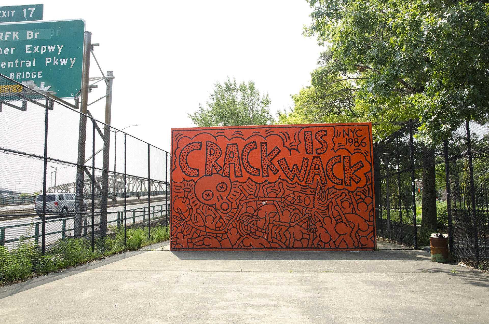

Stop 01 · Harlem

1986 · Harlem, Manhattan
Crack is Wack
Day-glo orange behind black figures twisting in alarm, two words repeating like a warning. Haring's handball-court mural from the height of the crack epidemic.
0:00 / 0:00
Listen
Next · Houston Bowery Wall subway south